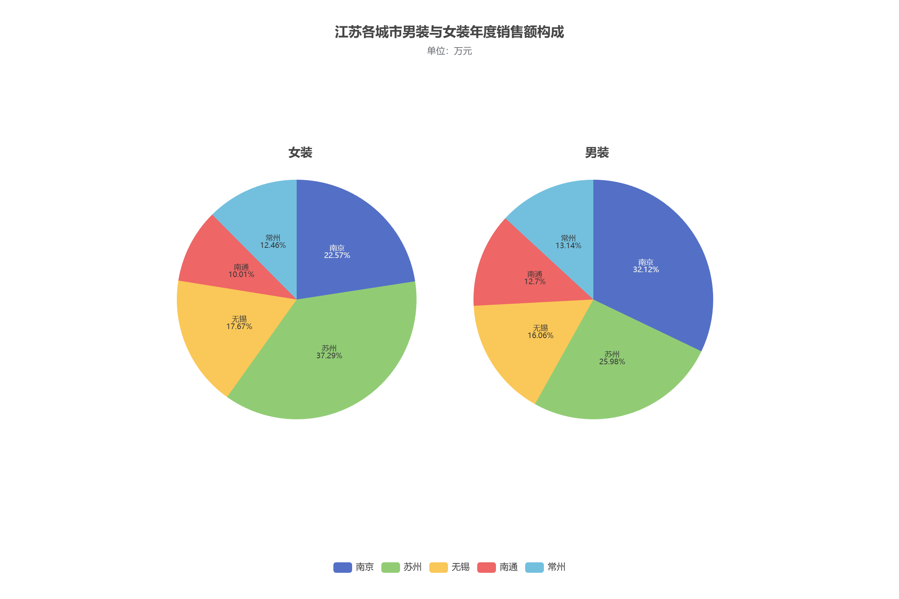

实验目的
掌握 radius 与 center，控制多个饼图的大小和位置。
实验数据
| 城市 | 女装 / 万元 | 男装 / 万元 |
|---|---|---|
| 南京 | 2300 | 2200 |
| 苏州 | 3800 | 1780 |
| 无锡 | 1800 | 1100 |
| 南通 | 1020 | 870 |
| 常州 | 1270 | 900 |
实现要点
- 女装和男装的半径均为 40%，水平中心分别为 33% 和 66%。
- 标签位于扇形内部，字号为 10，分两行显示城市和百分比。
运行结果


完整配置
var option = {
title: [
{
text: '江苏各城市男装与女装年度销售额构成',
subtext: '单位：万元',
left: 'center',
top: 30
},
{
text: '女装',
left: '33%',
top: '24%',
textAlign: 'center',
textStyle: { fontSize: 16 }
},
{
text: '男装',
left: '66%',
top: '24%',
textAlign: 'center',
textStyle: { fontSize: 16 }
}
],
tooltip: {
trigger: 'item',
formatter: '{a}<br/>{b}：{c} 万元（{d}%）'
},
legend: {
bottom: 30,
data: ['南京', '苏州', '无锡', '南通', '常州']
},
series: [
{
name: '女装销售额',
type: 'pie',
radius: '40%',
center: ['33%', '50%'],
label: {
show: true,
position: 'inside',
fontSize: 10,
formatter: '{b}\n{d}%'
},
labelLine: { show: false },
data: [
{ value: 2300, name: '南京' },
{ value: 3800, name: '苏州' },
{ value: 1800, name: '无锡' },
{ value: 1020, name: '南通' },
{ value: 1270, name: '常州' }
]
},
{
name: '男装销售额',
type: 'pie',
radius: '40%',
center: ['66%', '50%'],
label: {
show: true,
position: 'inside',
fontSize: 10,
formatter: '{b}\n{d}%'
},
labelLine: { show: false },
data: [
{ value: 2200, name: '南京' },
{ value: 1780, name: '苏州' },
{ value: 1100, name: '无锡' },
{ value: 870, name: '南通' },
{ value: 900, name: '常州' }
]
}
]
};
myChart.setOption(option);